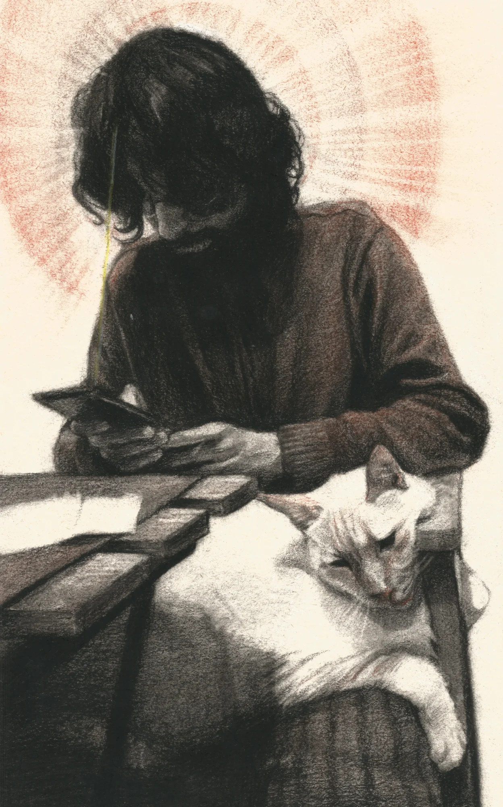

José Blanco Perales
Illustrator
José is an illustrator based in Madrid, Spain. He works in traditional media, specializing in book illustration, particularly fiction and poetry, and in portraiture.
Available for editorial commissions.

Illustrator
José is an illustrator based in Madrid, Spain. He works in traditional media, specializing in book illustration, particularly fiction and poetry, and in portraiture.
Available for editorial commissions.